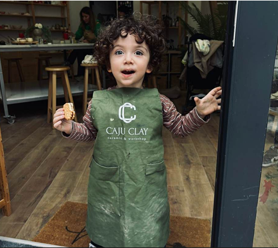
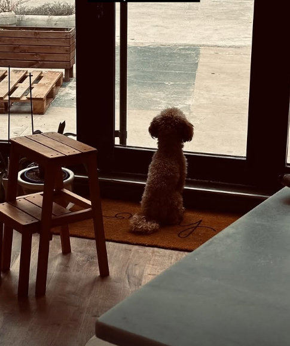
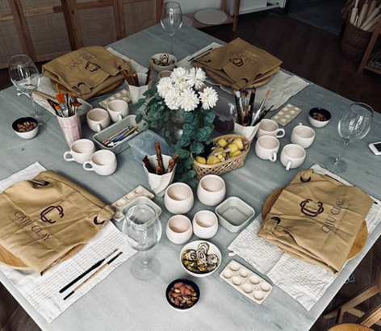
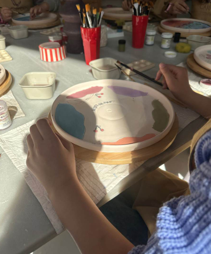
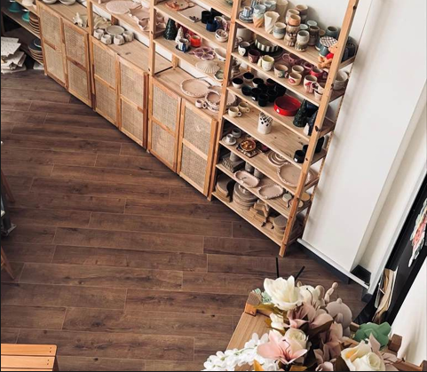
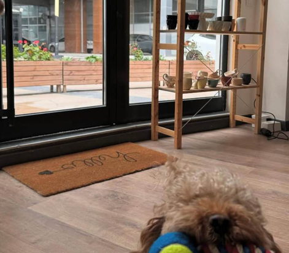
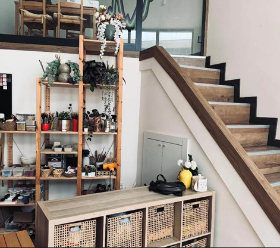

Çocuk Seramik Workshopu
Çocuklar çamuru elleriyle şekillendirerek kendi seramiklerini tasarlar.
Bahçeşehir'deki stüdyomuzda, çamur kokusu ve torna ritmi eşliğinde toprağa dokunmanın meditasyonel gücünü keşfedin.
Atölyeyi, kurucusu ve mimarı Ceyda Erten tasarladı. Ahşap, doğal tonlar ve işlevsel detaylarla seramik üretimine odaklanılabilecek sade bir alan oluşturdu.
Çocuklar ve yetişkinler için düzenlediğimiz workshoplarda katılımcılar çamuru şekillendiriyor, seramik yüzeyleri boyuyor ve kendi tasarımlarını üretiyor.


Çocuklar çamuru elleriyle şekillendirerek kendi seramiklerini tasarlar.

Çamura şekil vererek kendi seramik parçanızı tasarlayın.

Seramik yüzeyleri renkler ve desenlerle kişiselleştirin.
Katılımcılarımızın ellerinden çıkan ilk formlar ve Bahçeşehir'deki stüdyomuzun sakin çalışma ritmi.


